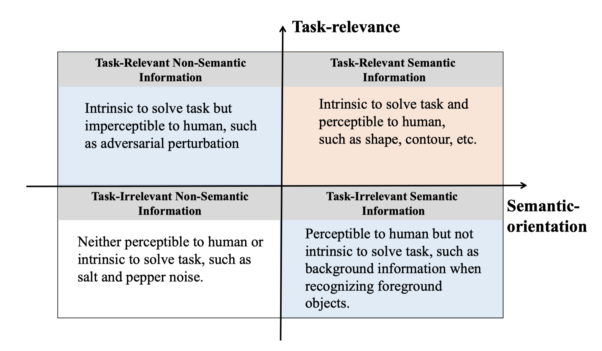

Due to the critical risk to machine learning algorithms, adversarial attack has been viewed as malignant in default, which naturally gives rise to the considerable attention on defense against adversarial examples. Beyond falling into this cat-and-mouse game, this paper attempts to provide alternative perspective to consider adversarial example and explore whether we can exploit it in other-than-malignant applications.
We start with the discussion on why adversarial example exists. The hypothesis is that adversarial example derives from the fact that algorithm utilizes information that human cannot understand. Using image as example, we analyze the involved information along two dimensions of task-relevance and semantic-orientation according to whether it is intrinsic to solve the task and whether it is perceptible to human, respectively.
image information is thus roughly divided into four categories in the task-semantic coordinate system. While human recognizes image mainly relying on task-relevant semantic information like shape and contour, machine learning algorithms can harness additional non-semantic information like imperceptible noises to assist inference. Adversarial example, in this respect, corrupts the task-relevant non-semantic information (with added adversarial perturbation) to mislead algorithm inference result without affecting human perception. From this perspective, we look on adversarial example as proving the existence of task-relevant non-semantic information, which demonstrates three interesting characteristics regarding machine learning algorithms as:
Based on this alternative understanding, this paper presents new idea to exploit the adversarial examples for goodness, which we call benign adversarial attack. Specifically, the following research directions are introduced corresponding to the above three characteristics:
The main contributions are summarized as follows: